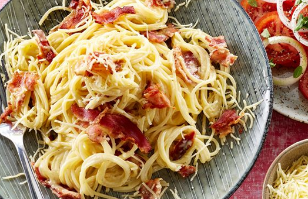

Fremgangsmetode Spaghetti carbonara - næsten som at sidde på en italiensk restaurant. Vi foreslår en tomatsalat til denne opskrift på spaghetti carbonara. Det ville de nok ikke gøre i Italien, de ville spise salaten bagefter, men ellers er den god nok. Carbonara er hele familiens livret og her er en klassisk af slagsen med lidt mindre fedt. Måske bliver denne udgave af spaghetti carbonara din nye yndlingsret?
ingredienser